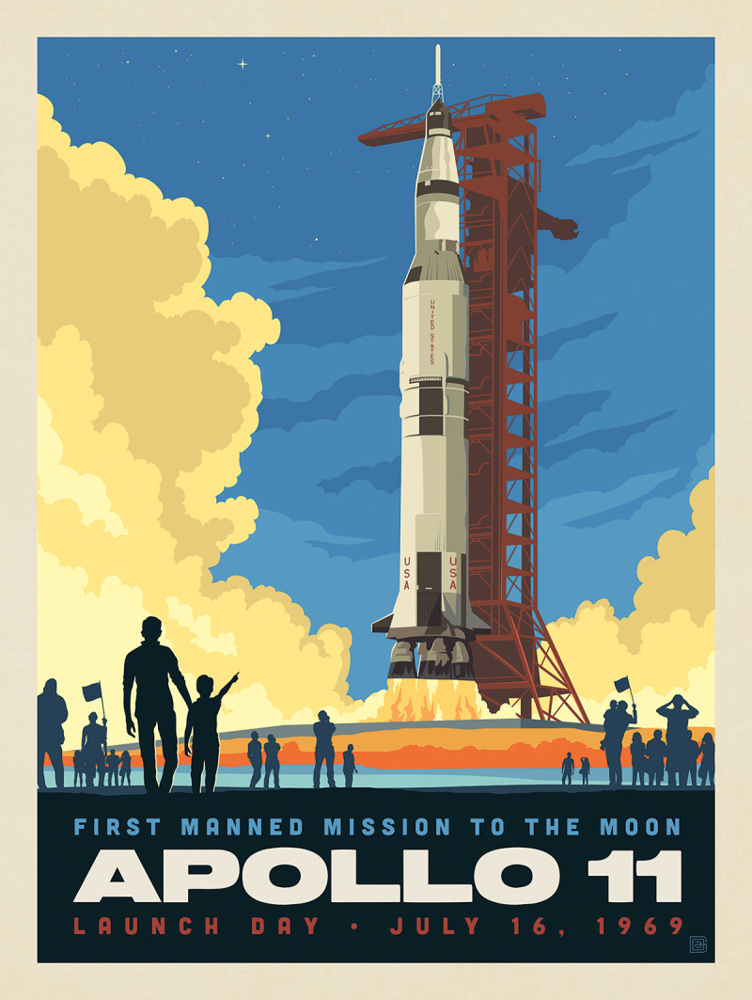
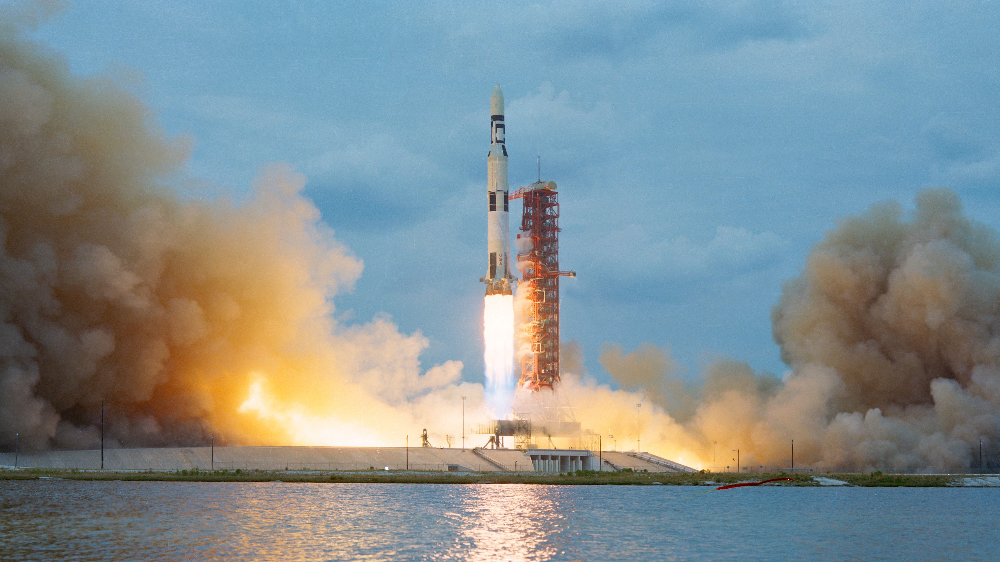

Apollo 11 Archive
Главная
Экипаж
Характеристики
Галерея
Журнал логов
О проекте
Историческая фотогалерея
Подборка ключевых кадров и схем миссии Apollo 11.

Подготовка к старту — Нил Армстронг

Запуск Saturn V
Командный модуль
Лунный модуль «Орел»
Разрез Saturn V — схема
Сбор образцов — Базз Олдрин
Схема траектории полёта